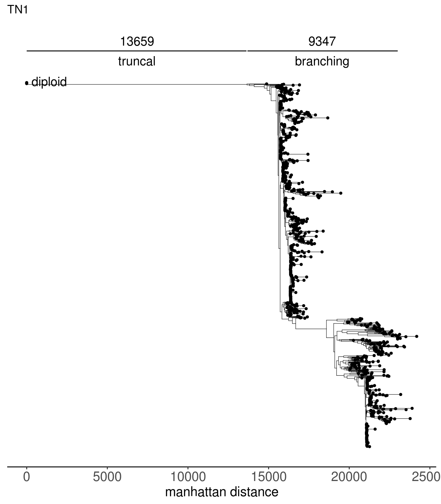
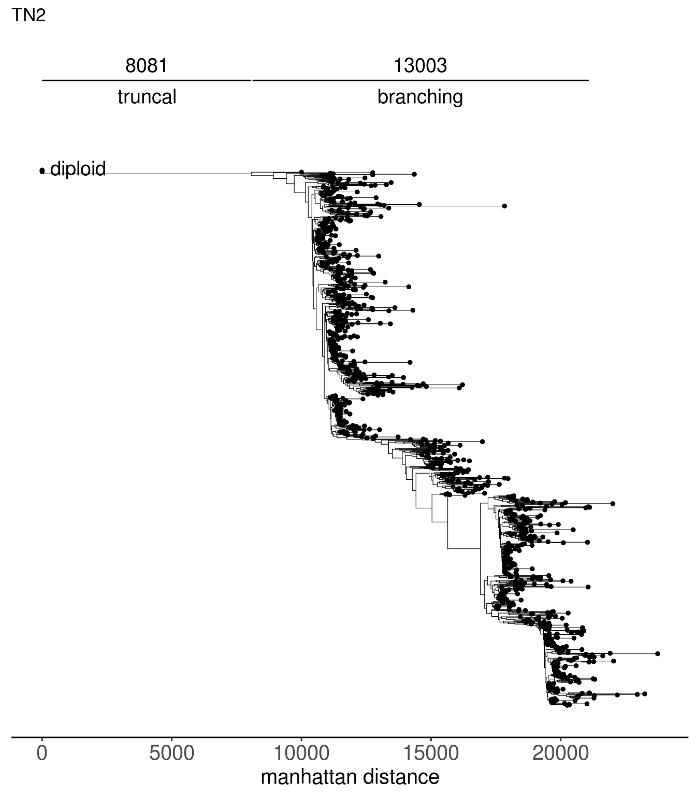
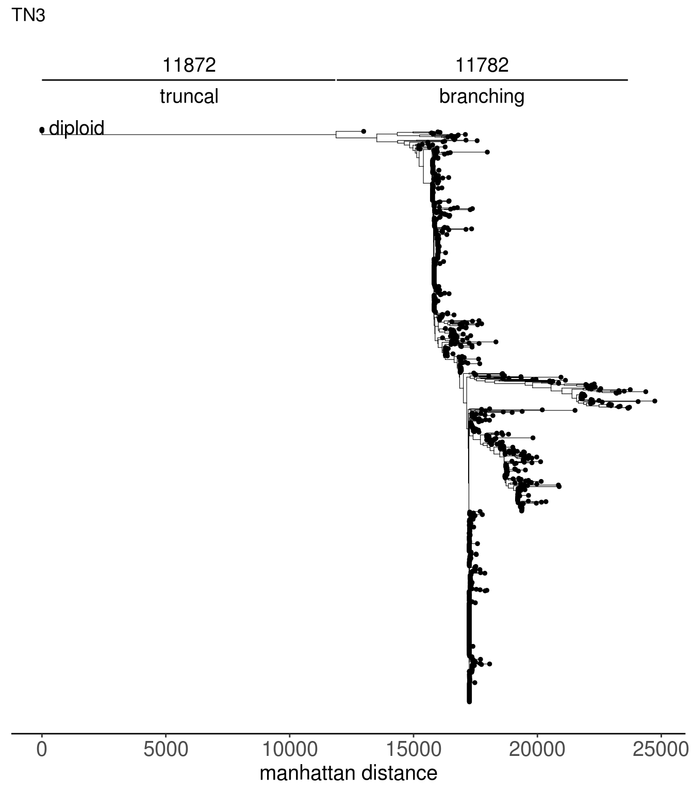
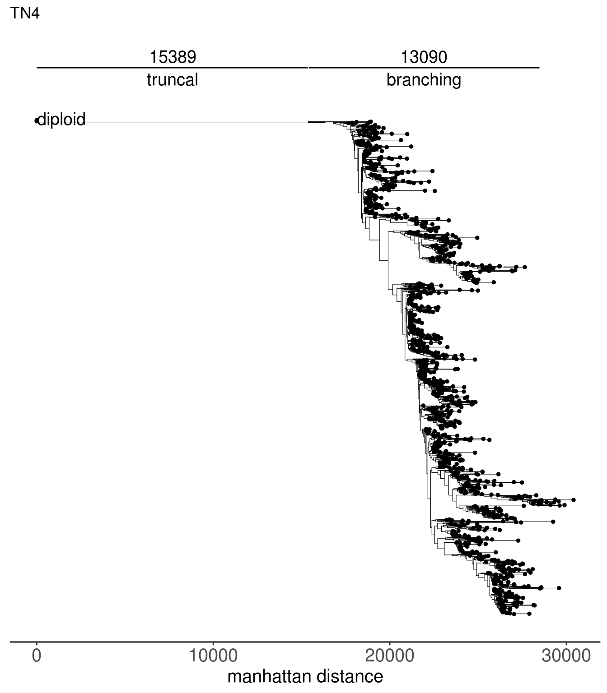
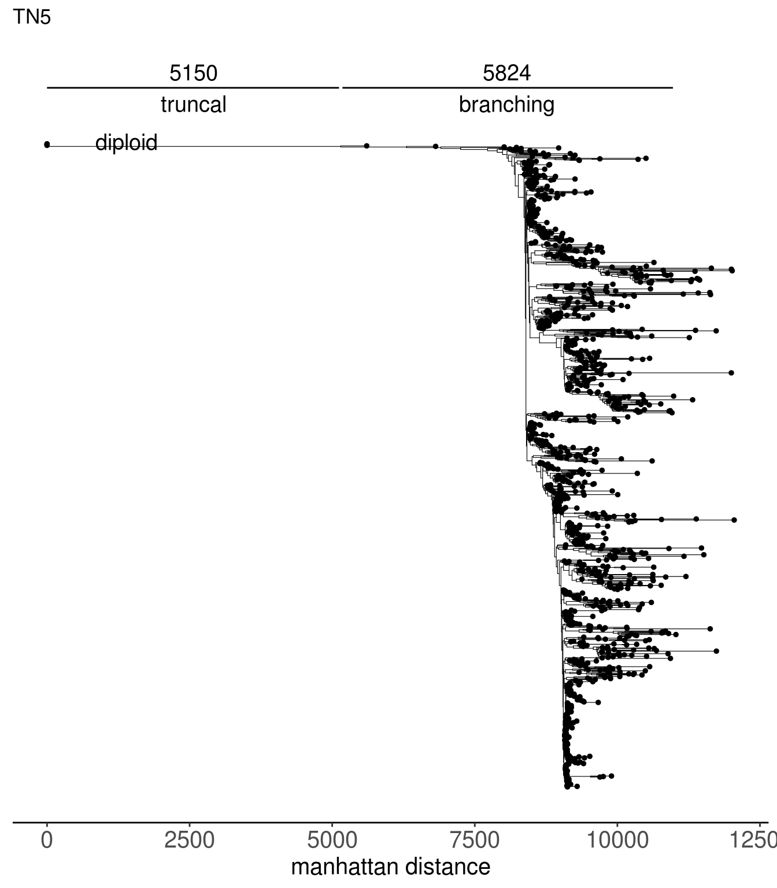
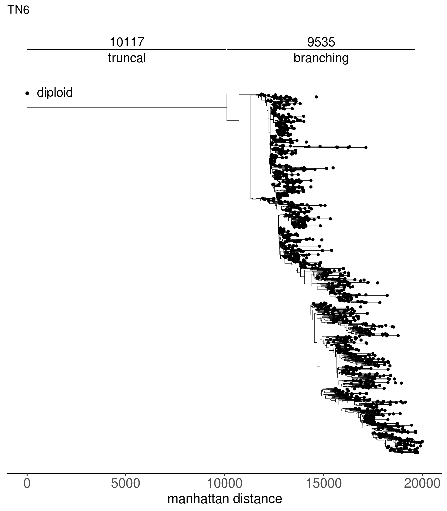
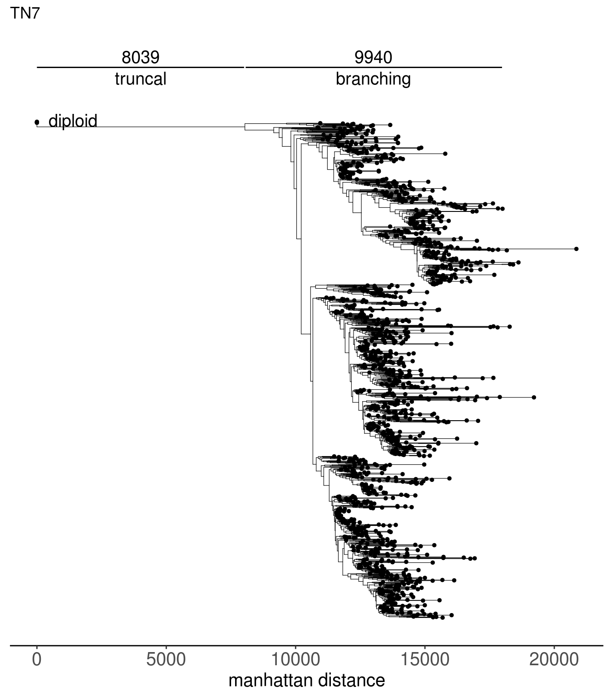
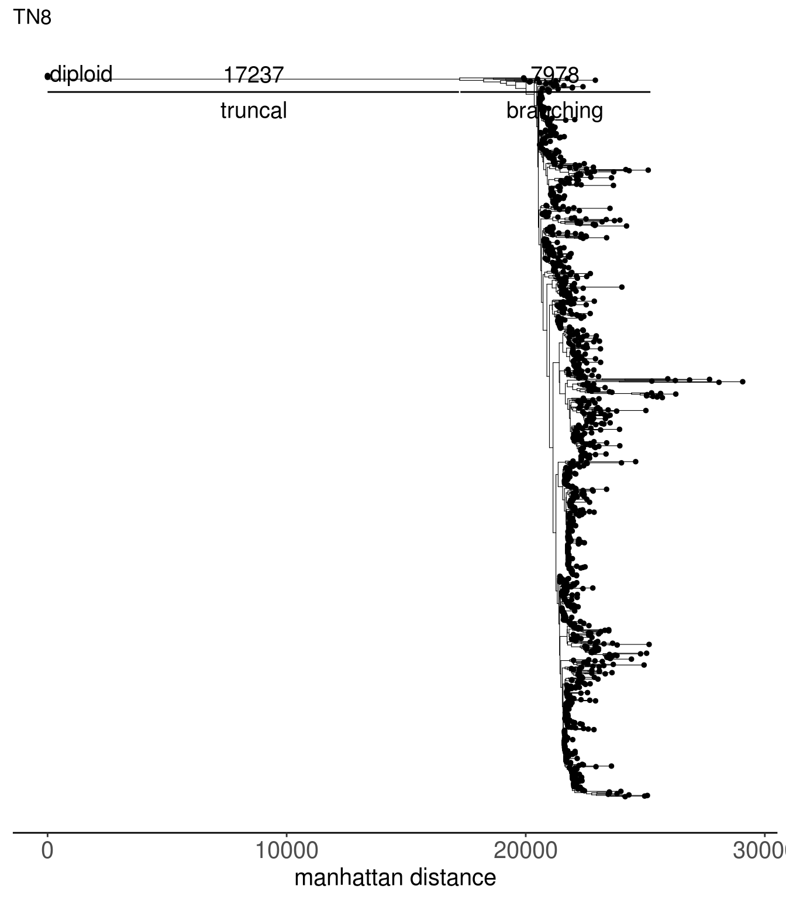
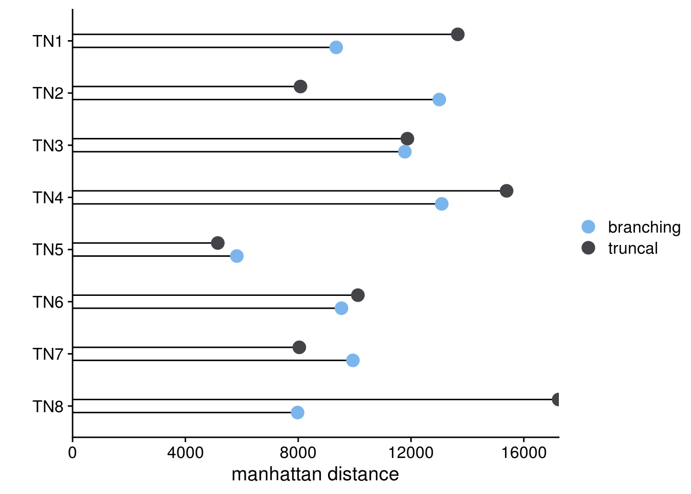

4 Single-Cell Trees
Function used to generate the trees using ape::fastme.bal() is make_single_cell_tree. Trees generated from the following function are provided in the directory extdata/trees
make_single_cell_tree <- function(tumor_log_segratio,
ploidy_VAL_diploid = 2,
tumor_ploidy_VAL,
tree_fun = "fastme.bal",
dist_metric = "manhattan") {
'%!in%' <- function(x,y)!('%in%'(x,y))
if (tree_fun %!in% c("nj", "fastme.bal")) {
stop("Please input a valid tree function. Accepted values are 'nj' or 'fastme.bal'")
}
normal_long <- tibble(
C1 = rep.int(1e-3, nrow(tumor_log_segratio)),
C2 = rep.int(1e-3, nrow(tumor_log_segratio)),
C3 = rep.int(1e-3, nrow(tumor_log_segratio)),
C4 = rep.int(1e-3, nrow(tumor_log_segratio))
)
normal_long <- as.data.frame(t(normal_long))
n_ploidy <- ploidy_scale(ploidy_VAL_diploid, normal_long)
rownames(n_ploidy) <- rownames(normal_long)
# tumor_long <- create_popseg_long(popseg_tumor) # tumor cells only
t_ploidy <- ploidy_scale(tumor_ploidy_VAL, tumor_log_segratio)
# combining normal and tumor cells
combined <- rbind(n_ploidy, t_ploidy)
if (tree_fun == "nj") {
tree <- ape::nj(amap::Dist(combined, method=dist_metric, nbproc = 40))
return(tree)
}
if (tree_fun == "fastme.bal") {
tree <- ape::fastme.bal(amap::Dist(combined, method=dist_metric, nbproc = 40))
return(tree)
}
}tn1_tree <- read.tree(here("extdata/trees/tn1_sc_tree.tree"))
tn2_tree <- read.tree(here("extdata/trees/tn2_sc_tree.tree"))
tn3_tree <- read.tree(here("extdata/trees/tn3_sc_tree.tree"))
tn4_tree <- read.tree(here("extdata/trees/tn4_sc_tree.tree"))
tn5_tree <- read.tree(here("extdata/trees/tn5_sc_tree.tree"))
tn6_tree <- read.tree(here("extdata/trees/tn6_sc_tree.tree"))
tn7_tree <- read.tree(here("extdata/trees/tn7_sc_tree.tree"))
tn8_tree <- read.tree(here("extdata/trees/tn8_sc_tree.tree"))## Warning: `data_frame()` is deprecated as of tibble 1.1.0.
## Please use `tibble()` instead.
## This warning is displayed once every 8 hours.
## Call `lifecycle::last_warnings()` to see where this warning was generated.## Warning: `mutate_()` is deprecated as of dplyr 0.7.0.
## Please use `mutate()` instead.
## See vignette('programming') for more help
## This warning is displayed once every 8 hours.
## Call `lifecycle::last_warnings()` to see where this warning was generated.







tn1_dist_nodes <- calc_sctree_dists(tn1_tree) %>% mutate(sample = "TN1")
tn2_dist_nodes <- calc_sctree_dists(tn2_tree) %>% mutate(sample = "TN2")
tn3_dist_nodes <- calc_sctree_dists(tn3_tree) %>% mutate(sample = "TN3")
tn4_dist_nodes <- calc_sctree_dists(tn4_tree) %>% mutate(sample = "TN4")
tn5_dist_nodes <- calc_sctree_dists(tn5_tree) %>% mutate(sample = "TN5")
tn6_dist_nodes <- calc_sctree_dists(tn6_tree) %>% mutate(sample = "TN6")
tn7_dist_nodes <- calc_sctree_dists(tn7_tree) %>% mutate(sample = "TN7")
tn8_dist_nodes <- calc_sctree_dists(tn8_tree) %>% mutate(sample = "TN8")
tumors_dist_nodes <- bind_rows(
tn1_dist_nodes,
tn2_dist_nodes,
tn3_dist_nodes,
tn4_dist_nodes,
tn5_dist_nodes,
tn6_dist_nodes,
tn7_dist_nodes,
tn8_dist_nodes
)
sc_trees_dist_plots <- tumors_dist_nodes %>%
gather(key = "evolution",
value = "manhattan_dist",
-sample,
-truncal_node) %>%
ggplot(aes(y = manhattan_dist,
x = fct_relevel(sample, rev(gtools::mixedsort(tumors_dist_nodes$sample))))) +
geom_linerange(aes(ymin = 0, ymax = manhattan_dist, group = evolution),
position = position_dodge(width = .5)) +
geom_point(aes(color = evolution,
group = evolution),
position = position_dodge(width = .5),
size = 4) +
coord_flip() +
scale_y_continuous(expand = c(0,0)) +
scale_color_paletteer_d("ggthemes::hc_default") +
labs(y = "manhattan distance",
color = "",
x = "") +
theme_cowplot()
sc_trees_dist_plots